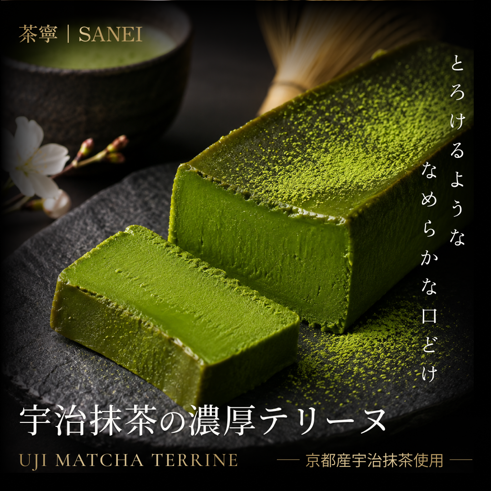

WORK

茶寧 SANEI 宇治抹茶テリーヌ バナー
DESIGN
茶寧 SANEI 宇治抹茶テリーヌ バナー(自主制作)
- 目的
- 宇治抹茶テリーヌの濃厚な味わいと上質感を視覚的に伝え、商品の魅力を印象づけることを目的としました。
- ターゲット
- 抹茶スイーツが好きな方や、自分へのご褒美・贈り物として上質なスイーツを求める方。
- 工夫した点
- ブラックを基調にゴールドと明朝体を組み合わせ、落ち着いた高級感を演出しました。
商品写真を大きく配置し、抹茶の濃厚さやなめらかな口どけが伝わるよう工夫しました。
また、縦書きのキャッチコピーと余白を活かし、和の上品さと統一感を意識しました。 - 制作期間
- 約1日間
- 使用言語・ツール
- Figma / ChatGPT（画像生成）